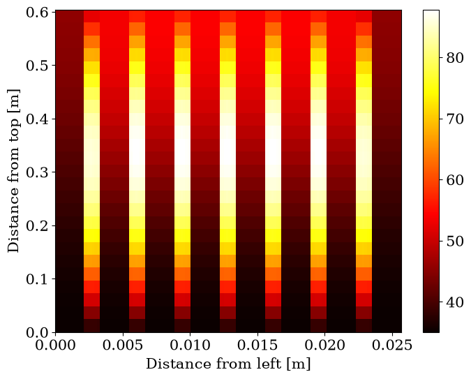

Multiple Plates In a Fuel Rod#
The example below attempts to model a single fuel rod, as alternating flow channels and fuel plates, where all flow channels are identical, and all fuel plates are identical.
We start by importing everything needed for the example
[1]:
import matplotlib.pyplot as plt
import numpy as np
from matplotlib import rc
rc("font", family="serif", size=15)
rc("savefig", dpi=600)
rc("figure", figsize=(8, 6))
rc("mathtext", fontset="dejavuserif")
rc("lines", linewidth=3)
from functools import partial
from more_itertools import interleave_longest
from stream import State
from stream.calculations import ChannelAndContacts, Fuel
from stream.calculations.heat_diffusion import Solid
from stream.calculations.ideal import HeatExchanger, Pump
from stream.calculations.kirchhoff import Junction
from stream.composition import FlowGraph, flow_edge, uniform_x_power_shape
from stream.composition.mtr_geometry import rod, x_boundaries
from stream.jacobians import ALG_jacobian
from stream.physical_models.heat_transfer_coefficient import (
regime_dependent_q_scb,
spl_htc,
wall_heat_transfer_coeff,
)
from stream.physical_models.pressure_drop import (
friction_factor,
pressure_diff,
rectangular_laminar_correction,
)
from stream.pipe_geometry import EffectivePipe
from stream.substances import light_water
from stream.units import cm, mm
from stream.utilities import cosine_shape
Entering data for fuel plate modeling#
[2]:
# Spatial discretization of the fuel plate
z_N, fuel_N, clad_N = 25, 3, 2
# Geometrical dimensions
meat_height = 60.4 * cm
meat_width = 63 * mm
meat_depth = 0.51 * mm
clad_depth = 0.38 * mm
# Material properties
clad = Solid(density=2700, specific_heat=9000, conductivity=2500) # numbers are approximate
fuel = Solid(density=3500, specific_heat=7500, conductivity=1000) # numbers are approximate
Initializing the input to the fuel model#
Modeling a fuel plate requires defining the x and z boundaries, plate materials, plate width, and a matrix that defines the distribution of power in the plate meat.
[3]:
# Fuel-plate-matrix shape. based on the spatial discretization defined above
shape = np.array([z_N, fuel_N + 2 * clad_N])
# Mask matrix that defines which cells are meat and which cells are cladding
meat = np.zeros(shape, dtype=bool)
meat[:, clad_N:-clad_N] = True
# Plate materials. Define a solid object from ``fuel`` and ``clad``
materials = np.empty(shape, dtype=object)
materials[meat] = fuel
materials[~meat] = clad
material = Solid.from_array(materials)
# Calculate a power distribution in the plate. The distribution is uniform along the x axis
# and follows a cosine shape along the z axis. ``uniform_x_power_shape`` is used for this purpose
plate_power_shape = uniform_x_power_shape(
z_N,
fuel_N,
clad_N,
meat_width,
meat_width,
meat_height,
partial(cosine_shape, ppf=np.pi / 2),
)
# Just making sure the total power shape sums to 1 as it should
print(np.sum(plate_power_shape))
# Fuel model requires the x boundaries of the spatial cells
x_bounds = x_boundaries(clad_N=clad_N, fuel_N=fuel_N, clad_w=clad_depth, meat_w=meat_depth)
0.9999999999999998
Defining the fuel plate model#
Note that name='Fuel' is temporary, since an aggregator requires each calculation to have a unique name.
[4]:
F = Fuel(
z_boundaries=np.linspace(0, meat_height, z_N + 1),
x_boundaries=x_bounds,
material=material,
y_length=meat_width,
meat_indices=meat,
power_shape=plate_power_shape,
name="Fuel",
)
Entering data for channel modeling#
[5]:
# Geometrical dimensions
channel_width = 66.6 * mm
channel_depth = 2.1 * mm
# Laminar and turbulent flow limits, based on Reynold's number
re_bounds = laminar_re_max, turbulent_re_min = 2500, 4000
Initializing the input to the channel model#
Modeling a flow channel requires defining z boundaries, fluid, pipe dimensions, heat transfer coefficient function, and a pressure difference function.
[6]:
# Laminar Darcy friction factor correction for a rectangular pipe (based on the pipe's aspect ratio)
a_dp = channel_depth / channel_width
k_R = rectangular_laminar_correction(a_dp)
# Pressure difference function
comp_friction = friction_factor("regime_dependent", re_bounds=re_bounds, k_R=k_R)
pressure_diff_func = partial(pressure_diff, f=comp_friction)
# Wall heat transfer coefficient function
comp_h_spl = spl_htc("regime_dependent", re_bounds=re_bounds, aspect_ratio=a_dp, Lh=meat_height)
comp_scb = partial(regime_dependent_q_scb, re_bounds=re_bounds)
htc = partial(wall_heat_transfer_coeff, h_spl=comp_h_spl, q_scb=comp_scb)
# Channel properties are held in an ``EffectivePipe`` object
fluid = light_water
pipe = EffectivePipe.rectangular(length=meat_height, edge1=channel_depth, edge2=channel_width, heated_edge=meat_width)
Defining the flow channel model#
Again, name='Channel' is temporary, and will be renamed later.
[7]:
C = ChannelAndContacts(
z_boundaries=np.linspace(0, meat_height, z_N + 1),
fluid=fluid,
pipe=pipe,
h_wall_func=htc,
pressure_func=pressure_diff_func,
name="Channel",
)
Let us define some approximate parameters of IRR-1#
I used some typical parameters just for the sake of this example.
[8]:
total_power = 15e6 # Watt
fuel_assembly_flow = 15 # m^3/h
core_rods = 24
plates_per_rod = 7
channels_per_rod = plates_per_rod + 1
plates_in_core = plates_per_rod * core_rods
# Assuming the power is generated evenly across the core
power_per_plate = total_power / plates_in_core
# mdot is split evenly between all the channels
mdot = fuel_assembly_flow * (1000 / 3600) / channels_per_rod # Kg/s
Tin = 35
p_abs = 1.67e5
Coupling channels and fuel plates using rod#
rod couples each adjacent fuel plate calculation and flow channel calculation correctly. This just means that the calculations are coupled by T_left , T_right , h_left , h_right.
[9]:
# ``rod`` conveniently returns the calculation graph, as well as lists of the channels and fuels used
calculation_graph, channels, fuels = rod(C, channels_per_rod, F, plates_per_rod)
# As said before, each calculation must have a unique name
# Also, here we insert initial conditions for all calculations in the form of external funcs
calculation_graph.funcs = {}
for i, c in enumerate(channels):
c.name = f"channel#{i + 1}"
calculation_graph.funcs |= {c: {"p_abs": p_abs}}
for i, f in enumerate(fuels):
f.name = f"fuel#{i + 1}"
calculation_graph.funcs |= {f: {"power": power_per_plate}}
# Finally, an aggregator can be initialized from the calculation graph
agr = calculation_graph.to_aggregator()
Note that this example can be extended to differing power distributions across the fuel plates, and even differing flow rates across the flow channels.
Adding kirchhoff calculations with a pump and heat exchanger#
Another layer for this example is the use of kirchhoff calculations. Here a closed flow loop is created, and the flow rate (mdot) is controlled by the pressure of the pump.
[10]:
# Pump and HeatExchanger are ideal calculations.
# Pump propagates the same water forward with a given pressure difference
# HeatExchanger changes the water temperature without affecting anything else
pressure = 1e5
P = Pump(pressure=pressure)
HX = HeatExchanger(Tin)
# Junctions are needed to define ``flow_edge``s and a ``FlowGraph``
A = Junction("A")
B = Junction("B")
# This flow graph describes a system of parallel channels,
# connected to a heat exchanger and a pump in series.
fg = FlowGraph(*[flow_edge((A, B), c) for c in channels], flow_edge((B, A), P, HX))
# Aggregator addition connects all the relevant calculations
agr_with_k = agr + fg.aggregator
[11]:
# Report is a nice tool that helps make sure our aggregator has everything it needs
from stream.analysis.report import report
report(agr_with_k)
Contains 2198 Equations, 20 Nodes, 88 Edges.
Calculation |
Type |
Equation No. |
Unset |
Set Externally |
Missing |
|---|---|---|---|---|---|
channel#1 |
ChannelAndContacts |
0 - 76 |
T_left, mdot2 |
p_abs |
|
fuel#1 |
Fuel |
76 - 301 |
T_top, T_bottom, h_top, h_bottom |
power |
|
channel#2 |
ChannelAndContacts |
301 - 377 |
mdot2 |
p_abs |
|
fuel#2 |
Fuel |
377 - 602 |
T_top, T_bottom, h_top, h_bottom |
power |
|
channel#3 |
ChannelAndContacts |
602 - 678 |
mdot2 |
p_abs |
|
fuel#3 |
Fuel |
678 - 903 |
T_top, T_bottom, h_top, h_bottom |
power |
|
channel#4 |
ChannelAndContacts |
903 - 979 |
mdot2 |
p_abs |
|
fuel#4 |
Fuel |
979 - 1204 |
T_top, T_bottom, h_top, h_bottom |
power |
|
channel#5 |
ChannelAndContacts |
1204 - 1280 |
mdot2 |
p_abs |
|
fuel#5 |
Fuel |
1280 - 1505 |
T_top, T_bottom, h_top, h_bottom |
power |
|
channel#6 |
ChannelAndContacts |
1505 - 1581 |
mdot2 |
p_abs |
|
fuel#6 |
Fuel |
1581 - 1806 |
T_top, T_bottom, h_top, h_bottom |
power |
|
channel#7 |
ChannelAndContacts |
1806 - 1882 |
mdot2 |
p_abs |
|
fuel#7 |
Fuel |
1882 - 2107 |
T_top, T_bottom, h_top, h_bottom |
power |
|
channel#8 |
ChannelAndContacts |
2107 - 2183 |
T_right, mdot2 |
p_abs |
|
A |
Junction |
2183 - 2184 |
|||
B |
Junction |
2184 - 2185 |
|||
Pump |
Pump |
2185 - 2187 |
pressure, mdot0 |
||
HX |
HeatExchanger |
2187 - 2189 |
|||
Kirchhoff |
Kirchhoff |
2189 - 2198 |
Now that we have no variables in the Missing column, all that is left to do is supply a guess for the steady state solution and solve.
For an initial guess here, we use the analytical solution for a single symmetrical plate and channel system, in every single fuel plate and channel.
[12]:
# All fuel plates and channels are identical, so using the parameters of the first ones is fine for a guess
f = fuels[0]
c = channels[0]
power_mat = np.zeros(f.shape)
power_mat[f.meat == 1] = power_per_plate * f.power_shape
cp = c.fluid.specific_heat(Tin)
p_z = np.sum(power_mat, 1)
q2t_z = p_z / (c.pipe.heated_perimeter * c.dz)
_tc0 = Tin + np.cumsum(p_z / (np.abs(mdot) * cp))
tc0 = _tc0 if mdot >= 0 else _tc0[::-1]
tw0 = tc0
initial_guess_iterations = 5
for _ in range(initial_guess_iterations):
dp0 = c.pressure(T=tc0, Tw=tw0, mdot=mdot)
h0 = c.h_wall(T_wall=tw0, T_cool=tc0, mdot=mdot, pressure=p_abs - dp0)
tw0 = (q2t_z / h0) + tc0
T0 = np.tile(tw0, f.shape[1]).reshape(f.shape[::-1]).T.flatten()
# Creating a user friendly dictionary of initial guesses for all calculation
# To be later converted to an array the aggregator can read by the ``agr.load`` method
y0_guess = {}
for f in fuels:
y0_guess |= {f.name: {"T": T0, "T_wall_left": tw0, "T_wall_right": tw0}}
for c in channels:
y0_guess |= {c.name: {"T_cool": tc0, "h_left": h0, "h_right": h0, "pressure": np.sum(dp0)}}
# We now need to provide an initial guess for the kirchhoff element of the aggregator.
# `` guess_steady_state `` gives a good primitive guess.
k_guess = fg.guess_steady_state({c: mdot for c in channels} | {P: mdot * channels_per_rod}, temperature=Tin)
# Combining two states can be done with `` State.merge ``
y0_with_k = agr_with_k.load(State.merge(k_guess, y0_guess))
Running a steady state calculation#
Solving for the steady state of the described system above,and saving the result in a user friendly dictionary.
Note that the use of jac=ALG_jacobian(agr) is meant to accelerate the proccess of calculating a jacobian for each step of root finding.
[13]:
state = agr_with_k.save(agr_with_k.solve_steady(y0_with_k, jac=ALG_jacobian(agr_with_k), tol=1e-2))
Analysis of the resulting state#
After solving for the steady state, we can present the solution in a few ways and analyze the results:
[14]:
# Plot the temperature of each flow channel along the z axis
for c in channels:
plt.plot(c.centers, state[c.name]["T_cool"], label=c.name)
plt.legend()
plt.grid()
plt.xlabel("Distance from top [m]")
plt.ylabel(r"Temperature [$\degree$C]")
plt.show()

Note that flow channels are emulated as one dimensional single phase liquid channels, where the heat is transfered via convection only. Since the channels are one dimensional, we assume the liquid temperature varies along the z axis only, meaning we get a one dimensional array of temperatures as seen above.
[15]:
# Plot the temperature of each fuel plate along the z axis, in the middle of the plate
for f in fuels:
T_mid = state[f.name]["T"][:, int(state[f.name]["T"].shape[1] / 2)]
plt.plot(channels[0].centers, T_mid, label=f"{f.name}")
plt.legend()
plt.grid()
plt.xlabel("Distance from top [m]")
plt.ylabel(r"Temperature [$\degree$C]")
plt.show()

[16]:
# Store the temperatures of the channels and plates in a single matrix for presentation
total_matrix = np.zeros((len(channels[0].centers), 1 * len(channels) + fuels[0].shape[1] * len(fuels)))
i = 0
for calc in interleave_longest(channels, fuels):
if isinstance(calc, ChannelAndContacts):
total_matrix[:, i] = state[calc.name]["T_cool"]
i += 1
elif isinstance(calc, Fuel):
total_matrix[:, i : i + calc.shape[1]] = state[calc.name]["T"]
i += calc.shape[1]
[17]:
# Plot a meshgrid of the temperatures in the core
depth = np.array([0])
d = 0
for calc in interleave_longest(channels, fuels):
if isinstance(calc, ChannelAndContacts):
depth = np.concatenate((depth, [d + channel_depth]))
d += channel_depth
elif isinstance(calc, Fuel):
bounds = x_boundaries(clad_N, fuel_N, clad_depth, meat_depth)
depth = np.concatenate((depth, d + 0.5 * (bounds[1:] + bounds[:-1])))
d += meat_depth + 2 * clad_depth
height = np.linspace(0, meat_height, z_N + 1)
X, Y = np.meshgrid(depth, height)
plt.pcolormesh(X, Y, total_matrix, shading="flat", cmap="hot")
plt.colorbar()
plt.ylabel("Distance from top [m]")
plt.xlabel("Distance from left [m]")
plt.show()

[18]:
# Plot the hottest point in each fuel plate
T_max = np.zeros(len(fuels))
for i, f in enumerate(fuels):
T_max[i] = np.max(state[f.name]["T"])
plt.scatter(range(1, len(fuels) + 1), T_max)
plt.xticks(range(1, len(fuels) + 1))
plt.grid()
plt.xlabel("Fuel plate number")
plt.ylabel(r"Temperature [$\degree$C]")
plt.show()